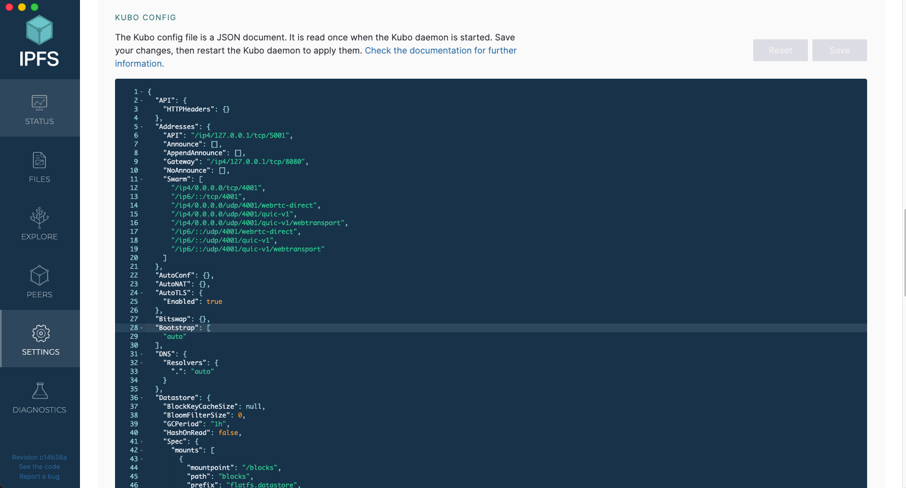

이번 세션에서는 Committee와 관련된Smart Contract를 작성하고 이 과정에서 발생하는 온체인&오프체인 흐름을 이해합니다. 또한, Smart Contract 보안 취약점과 대응 전략을 학습을 진행합니다.
목차
1. IPFS 구조 및 동작 원리
IPFS의 핵심 컴포넌트를 살펴보고 동작 방식을 익힙니다. 또한, 파일 추가·조회·핀(pinning) 등의 동작 흐름과 주요 사용법을 실습합니다.
2. Shamir's Secret Sharing(SSS) Algorithm
샤미르 비밀 공유의 수학적 원리와 구현 방법을 다루고, Committee 환경에서 비밀 분할·복원 절차와 안전성 고려사항을 확인합니다.
3. Committee Manager 구현
Shard 제출, 위원회 관리 등 CommitteeManager에 필요한 기능을 설계하고 Smart Contract를 구현합니다.
4. 취약점 탐색 및 수정
기존 컨트랙트에서 발생할 수 있는 온체인/오프체인 취약점을 찾아 수정합니다.
IPFS(InterPlanetary File System)는 콘텐츠 주소화(content addressing), 분산 P2P 네트워크(libp2p), DHT 기반 라우팅(BitSwap), IPLD(Merkle-DAG) 데이터 모델로 이루어진 분산 파일 시스템입니다. 핵심은 파일의 위치가 아니라 내용(CID) 으로 식별하고, 여러 피어가 데이터를 교환한다는 점입니다.
IPFS 구조 및 동작 원리
콘텐츠 주소화 & CID(Content Identifier)
IPFS는 파일이나 디렉터리를 저장할 때 먼저 데이터를 여러 블록으로 분할하고, 각 블록을 해시하여 고유한 식별자(CID)를 만듭니다. 해시를 통해 만들어졌으므로 같은 내용은 언제 어디서 저장되든 동일한 CID를 갖습니다. CID는 크기와 무관하게 짧고, 위치가 아닌 내용을 가리키는 주소입니다.
IPLD(Merkle-DAG) & UnixFS
IPFS에서 Merkle DAG를 통해 내용 그 자체로 구분하고, 여러 조각(블록)들이 서로 연결된 형태로 저장되도록 만들고, UnixFS는 이 위에 파일/디렉터리 구조를 얹어 실질적인 파일 저장, 탐색이 가능하도록 만든 포맷입니다. 이 두 가지가 결합됨으로써 IPFS는 파일 단위 저장의 유연성과 블록 단위 저장의 효율성을 동시에 확보할 수 있습니다.
데이터를 분할한 블록들 사이에 Merkle DAG(Directed Acyclic Graph) 구조를 구성하는데, 각 노드는 자신의 데이터(payload)와 자식 블록의 CID 리스트(links)를 포함하며, 이 두 정보를 해시한 값이 그 노드의 식별자가 됩니다. 이러한 방식 덕분에 중복되는 데이터 블록은 여러 위치에 저장되더라도 해시가 동일하기 때문에 자연스럽게 중복 제거(deduplication)가 이루어집니다.

IPFS 내 파일·디렉터리 저장을 위해 설계된 계층이 UnixFS입니다. UnixFS는 이 Merkle DAG 위에 파일 시스템처럼 보이도록 청크(chunk) 분할, 링크 구조, 디렉터리 계층 등 메타데이터를 더해 구현된 데이터 포맷입니다.
정리하자면, 크기가 큰 파일은 여러 블록으로 나뉘고 이 블록들은 Merkle DAG의 자식 노드로 연결되어 루트 노드가 전체 파일을 대표하게 됩니다. 이렇게 구성되면 파일의 각 부분을 개별적으로 검증하고, 블록 중 일부만 변경되어도 전체 CID가 변경되므로 변경 감지 및 무결성 관리가 수월해집니다.
Bitswap
노드들은 원하는 블록의 CID 리스트를 브로드캐스트하고, 연결된 피어로부터 직접 블록을 받습니다. 다수의 피어와 동시 교환이 가능합니다. 교환 전략은 기본적으로 tit-for-tat 정책을 사용합니다.
IPFS의 노드들은 자신이 필요로 하는 데이터 블록의 CID(Content Identifier) 목록(want-list)를 주변 피어들에게 브로드캐스트합니다. 이 목록을 받은 피어들은 자신이 해당 블록을 보유하고 있을 경우 이를 제공하며, 요청한 노드는 동시에 여러 피어로부터 데이터를 전송받을 수 있습니다. 이러한 병렬 교환 구조 덕분에 전송 속도와 네트워크 활용 효율이 크게 향상됩니다. BitTorrent와 유사하게 tit-for-tat 전략을 사용하여, 네트워크 참여자들이 공정하게 자원을 교환하도록 유도하고, 결과적으로 IPFS 전체의 데이터 가용성과 신뢰성을 높여 줍니다.
DHT
DHT(Distributed Hash Table)는 분산 네트워크 환경에서 데이터를 효율적으로 저장하고 검색하기 위한 해시 테이블 구조입니다. 네트워크 내의 특정 자원(resource)을 저장할 때, 해시 함수를 통해 자원의 정보를 암호화하여 고유한 키(key) 를 생성하고, 이 키를 담당할 노드를 일정한 규칙에 따라 선택하여 데이터를 분산 저장합니다. 즉, 각 노드는 전체 키 공간의 일부를 담당하며, 특정 키를 기반으로 어느 노드가 해당 데이터를 갖고 있는지를 계산할 수 있습니다. 이때 탐색 효율을 높이기 위해 각 노드는 다른 피어의 정보를 일정 부분만 알고 있으며, 대표적으로 Kademlia와 같은 알고리즘을 사용하여 O(log N) 단계 안에 원하는 데이터를 찾을 수 있습니다. IPFS에서는 Kademlia 기반 DHT를 사용하고 Content Routing을 위한 지도 역할이고, 실제 데이터 전송은 Bitswap으로 이루어집니다.
IPFS에서 사용하는 DHT에 대해서는 공식 문서에 잘 정리돼 있습니다.
IPFS 사용하기
실행과정
IPFS 실행하는 과정은 다음과 같습니다.
- IPFS 노드 설치: 먼저 사용할 컴퓨터 또는 장치에 IPFS 노드를 설치해야 합니다. CLI 환경이라면 Kubo를, Desktop 환경에서 사용하고 싶으면 Desktop App을 OS에 맞게 설치합니다.
- IPFS 노드 실행:
ipfs init으로 로컬 리포를 만들고,ipfs daemon으로 노드를 실행해 네트워크에 참여합니다. 브라우저용 대시보드와 로컬 게이트웨이도 확인할 수 있습니다. - 파일 추가: 파일을 IPFS에 추가하기 위해
ipfs add명령을 사용합니다. 이 명령을 사용하면 지정된 파일을 IPFS 네트워크에 추가하고 해당 파일의 해시 값을 반환합니다. 예를 들어, ipfs add example.txt 명령을 사용하여 "example.txt"라는 파일을 추가할 수 있습니다. - 해시 값 확인: 출력된 CID가 곧 파일의 식별자입니다. 같은 내용이면 CID가 동일합니다.
ipfs cat으로 내용 조회가 가능합니다. - 파일 공유: CID만 알면 전 세계 어디서든 접속 가능하며, 게이트웨이를 통해
https://ipfs.io/ipfs/같은 URL로도 접근할 수 있습니다. 영구 보존을 원하면 pin 하거나 핀닝 서비스(web3.storage 등)를 사용합니다.
IPFS Desktop
IPFS Desktop을 설치하면 다음과 같은 기본 대시보드를 볼 수 있습니다. 아래 사진처럼 로컬 Kubo 노드의 상태(Status), 피어 연결 수, 데이터 사용량, 게이트웨이 주소 등을 한눈에 확인할 수 있습니다.

Settings 화면의 맨 하단에는 Kubo Config 항목이 있습니다. 이는 로컬 IPFS 노드의 설정 파일(~/.ipfs/config)을 GUI 형태로 편집할 수 있는 영역입니다.

여기에서 Bootstrap이 auto로 되어 있으면 Kubo가 내장된 공식 부트스트랩 피어 목록을 자동으로 사용합니다. 이 피어들은 전 세계적으로 배포된 IPFS의 초기 진입 노드로, 노드가 처음 실행될 때 DHT 네트워크에 연결되도록 도와줍니다. 직접 네트워크(프라이빗 IPFS 클러스터 등)를 운영할 때는 여기에 커스텀 피어 리스트를 넣어주면 됩니다.
"Bootstrap": [
"/ip4/203.0.113.12/tcp/4001/p2p/QmExamplePeer"
]
이렇게 하면 Kubo가 공용 네트워크 대신 지정된 피어를 우선 연결 대상으로 사용합니다. 즉, 특정 조직·프로젝트 내에서만 콘텐츠를 공유하는 폐쇄형 IPFS 네트워크를 구성할 수 있습니다.
IPFS Desktop의 Files 탭에서는 로컬에서 업로드한 파일을 IPFS 네트워크에 추가하고 관리할 수 있습니다. 파일을 업로드하면 내부적으로 다음 과정이 일어납니다:
- 파일이 여러 블록(block)으로 분할합니다.
- 각 블록에 대해 CID가 계산됩니다.
- 블록들이 Merkle DAG 형태로 연결되어 파일 전체를 표현합니다.
- 루트 노드의 CID가 파일의 고유 주소가 됩니다.
이 구조를 시각적으로 보고 싶다면, 파일을 선택한 후 Inspect 버튼을 클릭하면 됩니다.

Kubo
Kubo는 Go로 작성된 IPFS의 가장 널리 쓰이는 구현체이며, CLI/RPC API/게이트웨이를 제공합니다. 과거 이름은 go-ipfs입니다.
- 저장소 초기화
ipfsKubo는 모든 설정과 내부 데이터를 저장소라는 디렉터리에 저장합니다. Kubo를 처음 사용하기 전에 저장소를 초기화해야 합니다.
ipfs init
다음과 같은 형태로 출력되면 됩니다.

- 노드를 온라인으로 전환
노드를 온라인으로 전환하고 IPFS 네트워크와 상호 작용합니다. 다른 터미널 창을 열어 IPFS 데몬을 시작합니다.
ipfs daemon
원래 터미널 창으로 돌아가 ipfs swarm peers피어의 IPFS 주소를 확인합니다.
ipfs swarm peers
- 파일 가져오기
다음의 명령어를 입력하여 우주선 발사 사진을 가져옵니다. QmSgvgwxZGaBLqkGyWemEDqikCqU52XxsYLKtdy3vGZ8uq는 공식 문서에서 소개된 CID입니다.
ipfs cat /ipfs/QmSgvgwxZGaBLqkGyWemEDqikCqU52XxsYLKtdy3vGZ8uq > ~/Desktop/spaceship-launch.jpg
- 파일 업로드
원하는 파일을 다음의 명령어를 통해 업로드합니다.
ipfs add spaceship-launch.jpg
다음과 같이 추가됩니다.

web3.storage
web3.storage는 IPFS이나 Filecoin을 쉽게 사용할 수 있는 서비스입니다. 업로드 시 자동으로 CAR(내용 주소 가능 아카이브)로 패킹하고, IPFS에 배포하며 Filecoin 백업을 제공합니다. JS/Go/HTTP API를 지원합니다. 우리는 자체 노드를 운영하지 않고 암호화된 소스코드(데이터)를 보관하기 위해 사용할 예정입니다.
HTTP/Go 클라이언트 예시와 상세 API는 레퍼런스 문서에서 확인할 수 있습니다.
Helia
Helia는 브라우저/Node.js 환경을 위한 모던 JS IPFS 구현체입니다. 모듈화가 잘 되어 있고, @helia/* 패키지와 js-kubo-rpc-client 등과 함께 사용할 수 있습니다. 공식 JS 레퍼런스는 Helia와 연동 도구들을 소개합니다.
Pinata
Pinata는 IPFS 상에서 파일을 손쉽게 업로드하고 영구적으로 고정(pin) 시킬 수 있도록 도와주는 클라우드 기반의 IPFS 핀 서비스입니다. IPFS는 탈중앙화된 파일 저장 네트워크이기 때문에, 기본적으로 특정 노드가 파일을 보관하지 않으면 데이터가 사라질 수 있습니다. Pinata는 사용자가 업로드한 콘텐츠를 자사 노드에 고정해 두어 언제나 접근 가능하도록 유지해 주는 역할을 합니다.
현재 웹 데모는 로컬 환경이거나 Pinata를 사용 불가능한 환경에서는 Helia를 이용해 브라우저에 파일을 저장하고, Pinata를 사용 가능한 환경에서 Helia로 업로드된 파일을 Pinata 스토리지에 다시 한 번 저장합니다. 이를 사용하려면 회원가입 후 API Key를 받아주세요.
샤미르 비밀 공유의 수학적 원리와 구현 방법을 다루고, Committee 환경에서 비밀 분할·복원 절차와 안전성 고려사항을 확인합니다.
Shard 제출, 위원회 관리 등 CommitteeManager에 필요한 기능을 설계하고 Smart Contract를 구현합니다.
축하합니다! 성공적으로 License 관련 컨트랙트를 작성하고 IPFS에 대해 익혔습니다. 다음 시간에는 위원회 관련 컨트랙트 개발과 기존 컨트랙트에서 보안할 점을 확인하도록 하겠습니다.
도움이 될 만한 자료
- Lit Protocol: Lit Protocol은 key와 secrets을 관리하기 위한 탈중앙화 네트워크 프로토콜입니다. 본 프로젝트는 이러한 Lit Protocol에서 영감을 받아, DKG(Distributed Key Generation) 개념을 기반으로 이를 솔리디티로 구현하였습니다. Lit Protocol에 대한 보다 자세한 내용은 공식 백서를 참고하시기 바랍니다.
- IPFS Concepts: IPFS는 Web3 생태계에서는 중대형 오픈소스 프로젝트입니다. 또한, 이에 대한 구현 원리를 이해하기 위해서 Merkle DAG, UnixFS, DHT, Pub/Sub 모델(Gossip), BitSwap 등 Computer Sicence 관련 배경지식을 많이 요구합니다.
- proto school: IPFS나 filecoin과 같은 분산형 웹 스토리지 시스템에 관한 기술 튜토리얼입니다.